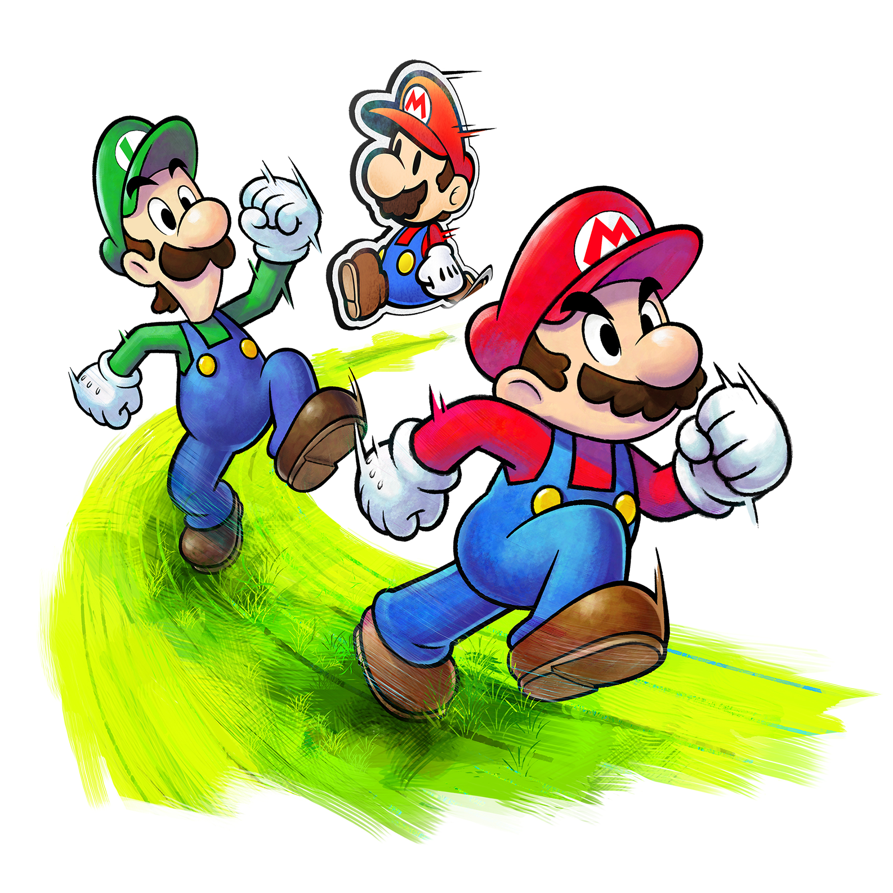
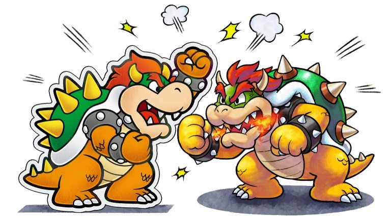
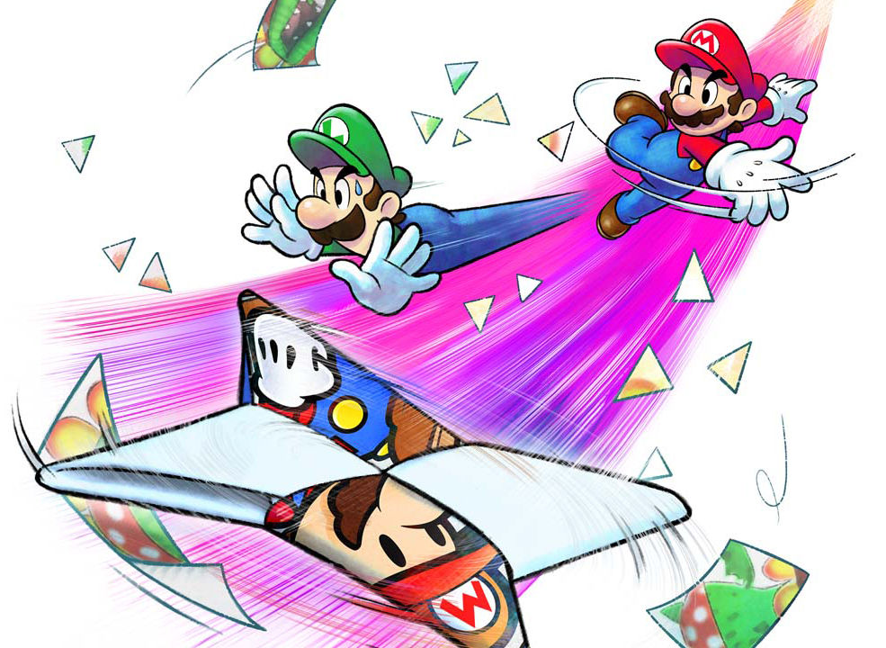

 Traverse the Mushroom Kingdom in the most recent installment of the Mario & Luigi Series. Mario, Luigi, and Paper Mario go on a journey to defeat Bowser and Paper Bowser to save the Kingdom.
 Bowser is back again along with Paper Bowser. They have overrun the Kingdom with the Paper Kingdom, causing chaos across both lands. Peace must be restored before both kingdoms are in ruin.
 Use Paper Mario's newfound abilities to explore in brand new ways. Use them to your advantage to take down a double threat.